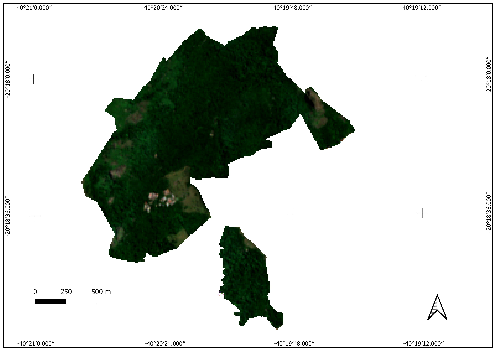
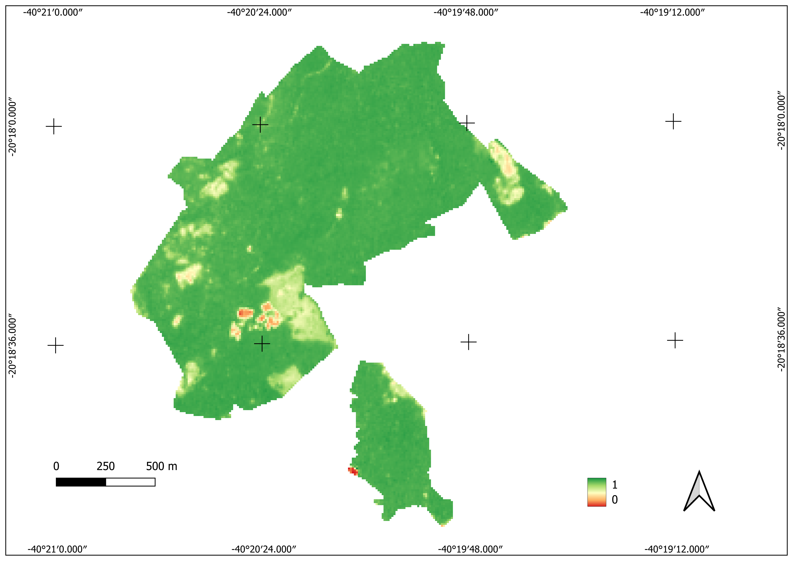

Relatório do Parque Estadual Fonte Grande - 24 de março de 2025
O Parque Estadual da Fonte Grande é uma unidade de conservação
brasileira criada em 7 de agosto de 1986 no município de Vitória,
Espírito Santo. Com uma área de 260 hectares, abrange os morros da
Fonte Grande, Mulundú, Santa Clara, Pedra do Vigia, Bastos e Pedra
dos Olhos.
Características Gerais
O parque é a última área contígua de grande porte com vegetação
característica de encostas da Mata Atlântica. A topografia é
acidentada, com relevo ondulado, incluindo vales e pontões.
Composição em Cor Real - 10 de Março de 2025
Imagem mais recente disponível (sem nuvem) em
10 de março de 2025. Cada pixel representa 10m x
10m. A imagem foi capturada pelo satélite Sentinel-2.

Composição em Cor Real do Parque Estadual Fonte Grande
Índices de Vegetação
Os índices de vegetação são ferramentas para monitorar a saúde e a
cobertura vegetal de uma área. Eles são calculados a partir de
combinações de bandas espectrais de imagens de satélite e podem
fornecer informações sobre a vegetação e o solo.
Índice de Vegetação por Diferença Normalizada (NDVI)
O NDVI aproveita as diferenças na forma como as plantas refletem a
luz. A vegetação saudável contém muita clorofila, que absorve
intensamente a luz vermelha visível para a fotossíntese, ao mesmo
tempo em que reflete grande parte da radiação infravermelha
próxima (NIR). Superfícies como solo e água refletem luz vermelha
e NIR de maneira mais uniforme. O NDVI varia de -1 a +1; valores
próximos de +1 indicam vegetação densa e saudável, enquanto
valores próximos de 0 ou negativos sugerem pouca ou nenhuma
vegetação.

Mapa de NDVI do Parque Estadual Fonte Grande
Índice de Vegetação Aprimorado (EVI)
O EVI é uma alternativa ao NDVI, projetada para melhorar a
sensibilidade em áreas de vegetação densa e reduzir os efeitos da
atmosfera e do solo. Ele utiliza bandas adicionais, como o azul,
para corrigir distorções causadas por partículas na atmosfera e
pela refletância do solo. O EVI é particularmente útil em regiões
tropicais, onde a vegetação é exuberante e o NDVI pode saturar,
fornecendo uma visão mais detalhada da saúde da vegetação.
O gráfico apresenta a média do NDVI da área nos últimos três anos,
juntamente com a precipitação mensal em barras. A análise revela
uma clara sazonalidade no NDVI, com picos coincidindo ou seguindo de
perto os períodos de maior precipitação. Essa relação sugere uma
forte dependência da vegetação à disponibilidade de água, onde a
alta precipitação impulsiona o crescimento vegetal e,
consequentemente, eleva o NDVI. Em contraste, a diminuição da
precipitação está associada a um NDVI mais baixo, indicando possível
estresse hídrico na vegetação. A observação da sazonalidade é
importante para entender a dinâmica ecossistêmica da área.